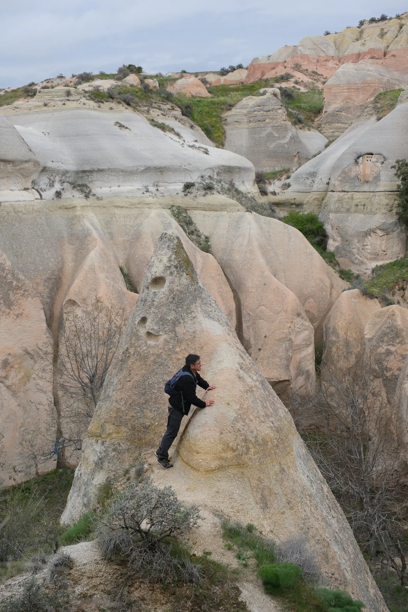

Personal note
About Me
Dr.-Ing. Fernando Peñaherrera V.
Hi! My name is Fernando. I am a travel enthusiast with a soft spot for places where history, landscape, and everyday life meet. When I travel, I like to combine local culture, archaeological and historical sites, beautiful natural scenery, small artifacts and souvenirs, and conversations with fellow travelers along the way.
Outside of travel, my hobbies include playing and composing music for piano, drawing and painting, swimming, bouldering, weekend technical projects, video games, and avoiding cooking whenever possible.
Professionally, I am a Senior Postdoctoral Researcher at the OFFIS Institute for Computer Science in Germany. My work focuses on the modeling of energy systems and production chains, especially for evaluating sustainability, system performance, and future scenarios in complex simulation environments.
